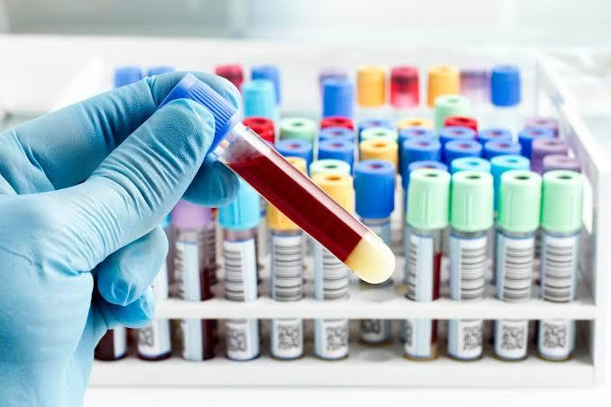
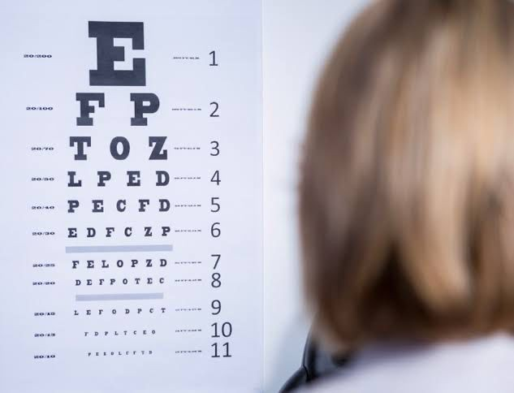

Daily consultations
Adults, children, teenagers and pregnant patients — all seen in one place.
Services
Prices: awaiting client confirmation.
Adults, children, teenagers and pregnant patients — all seen in one place.
Consultations and reports in Kyrgyz, Russian, English, Chinese, German and French.
Growth and development, vision screening, EKG, anemia and diabetes screening, laboratory tests.
For schools, flying, travel and tourism, employment and insurance.

